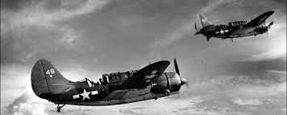

la segunda gerra mundial
La Segunda Guerra Mundial fue un conflicto armado que tuvo lugar entre 1939 y 1945 y que involucró de manera directa o indirecta a la mayor parte del mundo, especialmente a las potencias militares y económicas de la época.
Se la considera la guerra más devastadora de la historia contemporánea, debido a la cantidad de personas involucradas, las enormes dimensiones territoriales del conflicto, la cantidad de armamento bélico empleado y sus catastróficas consecuencias. Se estima que entre cuarenta y sesenta millones de personas murieron durante este conflicto.
.jpg) La Segunda Guerra Mundial se desarrolló principalmente en tres escenarios: Europa, el norte de África, y Asia oriental y el Pacífico. En ellos se enfrentaron las tropas de dos bandos opuestos, los Aliados y las Potencias del Eje, en un conflicto que afectó tanto a las fuerzas militares como a la población civil de los países involucrados.
En el contexto de esta guerra se produjeron hechos especialmente dramáticos, como el asesinato masivo de personas en campos de exterminio y de trabajos forzados del nazismo (mayormente población judía, lo que recibió el nombre de Holocausto o Shoá).
Además, durante este enfrentamiento se utilizaron por primera y única vez en la historia las armas nucleares, que provocaron la destrucción masiva de dos ciudades y la muerte instantánea de decenas de miles de civiles (fue el caso de las bombas atómicas lanzadas por Estados Unidos sobre las ciudades japonesas de Hiroshima y Nagasaki).
La Segunda Guerra Mundial se desarrolló principalmente en tres escenarios: Europa, el norte de África, y Asia oriental y el Pacífico. En ellos se enfrentaron las tropas de dos bandos opuestos, los Aliados y las Potencias del Eje, en un conflicto que afectó tanto a las fuerzas militares como a la población civil de los países involucrados.
En el contexto de esta guerra se produjeron hechos especialmente dramáticos, como el asesinato masivo de personas en campos de exterminio y de trabajos forzados del nazismo (mayormente población judía, lo que recibió el nombre de Holocausto o Shoá).
Además, durante este enfrentamiento se utilizaron por primera y única vez en la historia las armas nucleares, que provocaron la destrucción masiva de dos ciudades y la muerte instantánea de decenas de miles de civiles (fue el caso de las bombas atómicas lanzadas por Estados Unidos sobre las ciudades japonesas de Hiroshima y Nagasaki).
causa de la segunda gerra mundial
Las causas de la Segunda Guerra Mundial dependen del rango temporal que se aplique. A largo plazo, las causas se encuentran en las condiciones que existían antes de la Primera Guerra Mundial, antecedentes que son vistos como preámbulo de ambas guerras mundiales. Los partidarios de este punto de vista, parafrasean a Carl von Clausewitz al decir: «la Segunda Guerra Mundial fue la continuación de la Primera Guerra Mundial»; las guerras mundiales se esperaban incluso antes de la llegada al poder de Mussolini, Hitler y la invasión japonesa de China.
Entre las causas más a corto plazo de la Segunda Guerra Mundial se puede mencionar el ascenso del fascismo italiano en la década de 1920, el militarismo japonés y sus invasiones a China en la década de 1930 y en especial la toma del poder político por Adolf Hitler y el Partido Nazi en Alemania en 1933, a lo que siguió una agresiva política exterior. El detonante del conflicto fue la declaración de guerra de Reino Unido y Francia a la Alemania nazi el 3 de septiembre de 1939, tras la invasión alemana de Polonia del día 1 de septiembre de aquel año.
cuando fuel el inicio de la segundagerra mundial
La Segunda Guerra Mundial comenzó el 1 de septiembre de 1939, con la invasión de Polonia por parte de Alemania. Esta acción provocó que Gran Bretaña y Francia declararan la guerra a Alemania, marcando el inicio formal del conflicto a nivel mundial.
Desarrollo de los eventos:
Invasión de Polonia:
El 1 de septiembre de 1939, Alemania, liderada por Adolf Hitler, invadió Polonia utilizando una estrategia militar conocida como "blitzkrieg" (guerra relámpago).
Declaración de Guerra:

Gran Bretaña y Francia, que tenían acuerdos de defensa con Polonia, declararon la guerra a Alemania el 3 de septiembre.
Expansión del conflicto:
La invasión de Polonia fue el detonante, pero la guerra se expandió rápidamente para involucrar a muchas naciones en diferentes frentes, incluyendo Europa, África, Asia y el Pacífico.
como se finalizo la segunda gerra mundial
Cuándo y cómo terminó la Segunda Guerra Mundial en Europa
La Segunda Guerra empezó el 1 de septiembre de 1939 con la invasión alemana de Polonia y finalizó en Europa en mayo de 1954, indica la Enciclopedia del Holocausto del Museo Conmemorativo del Holocausto de los Estados Unidos.
Durante la guerra se enfrentaron los Aliados (Gran Bretaña. Estados Unidos y la Unión Soviética) y las potencias del Eje (Alemania, Japón e Italia).
(Ver también: ¿Qué fue la Guerra Fría?)
Tras varios años de lucha, el 6 de junio de 1944, durante el día D, más de 150 mil soldados aliados desembarcaron en Normandía, Francia, y la liberaron a finales de agosto.
.jpg) Este avance, junto con la ofensiva fallida de Alemania en la región de las Ardenas, la frontera de Francia con Bélgica y Alemania, durante el invierno de 1944-1945, marcó el empuje final del Tercer Reich en Occidente.
Después de esto, continúa la Enciclopedia del Holocausto, el 16 de abril de 1945 una ofensiva final soviética permitió que sus fuerzas cercaran Berlín, la capital de Alemania. Finalmente, el 30 de abril, mientras las tropas soviéticas avanzaban hacia la Cancillería del Reich, Adolf Hitler se suicidó y el 7 de mayo Alemania se rindió ante los Aliados occidentales en Reims (Francia) y el 9 de mayo ante los soviéticos en Berlín (Alemania).
Este avance, junto con la ofensiva fallida de Alemania en la región de las Ardenas, la frontera de Francia con Bélgica y Alemania, durante el invierno de 1944-1945, marcó el empuje final del Tercer Reich en Occidente.
Después de esto, continúa la Enciclopedia del Holocausto, el 16 de abril de 1945 una ofensiva final soviética permitió que sus fuerzas cercaran Berlín, la capital de Alemania. Finalmente, el 30 de abril, mientras las tropas soviéticas avanzaban hacia la Cancillería del Reich, Adolf Hitler se suicidó y el 7 de mayo Alemania se rindió ante los Aliados occidentales en Reims (Francia) y el 9 de mayo ante los soviéticos en Berlín (Alemania).